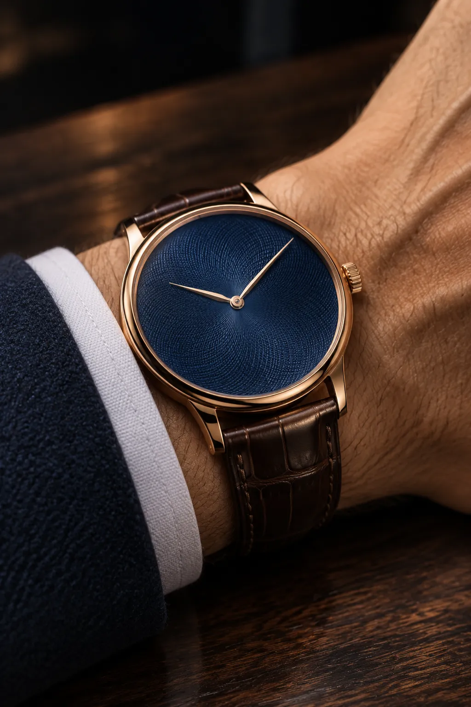
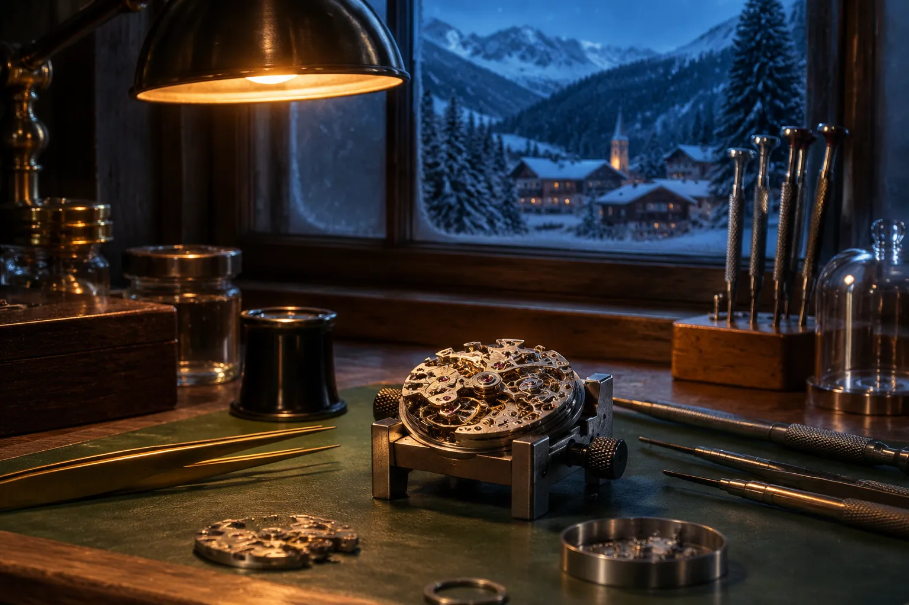
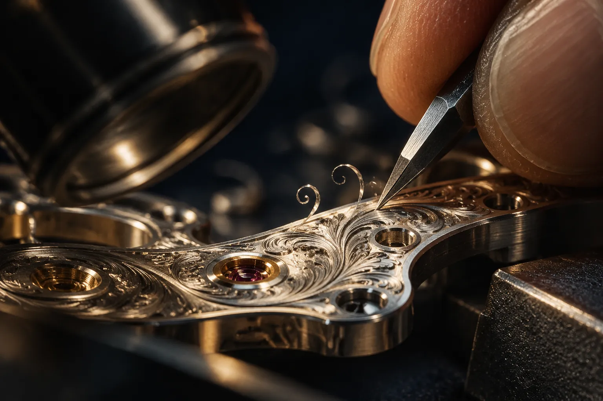
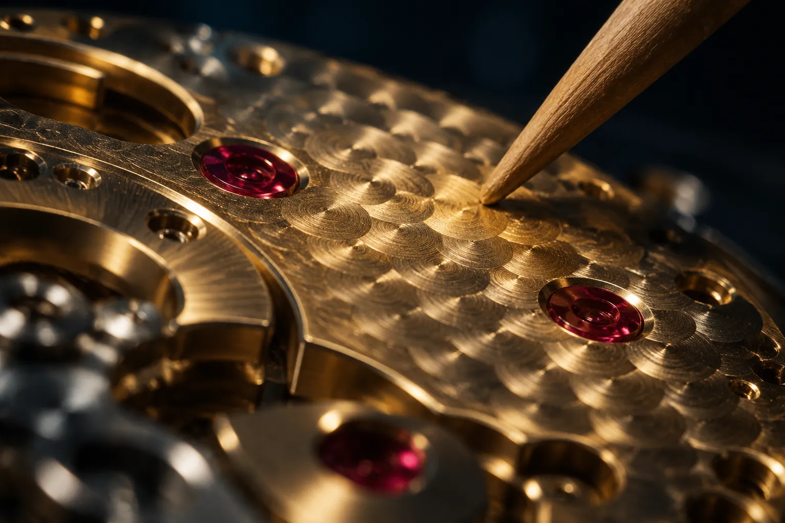
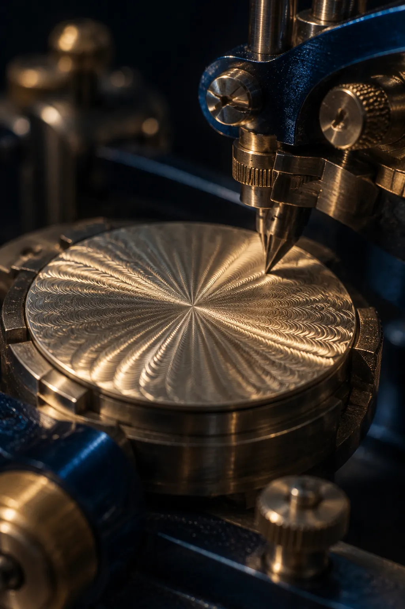
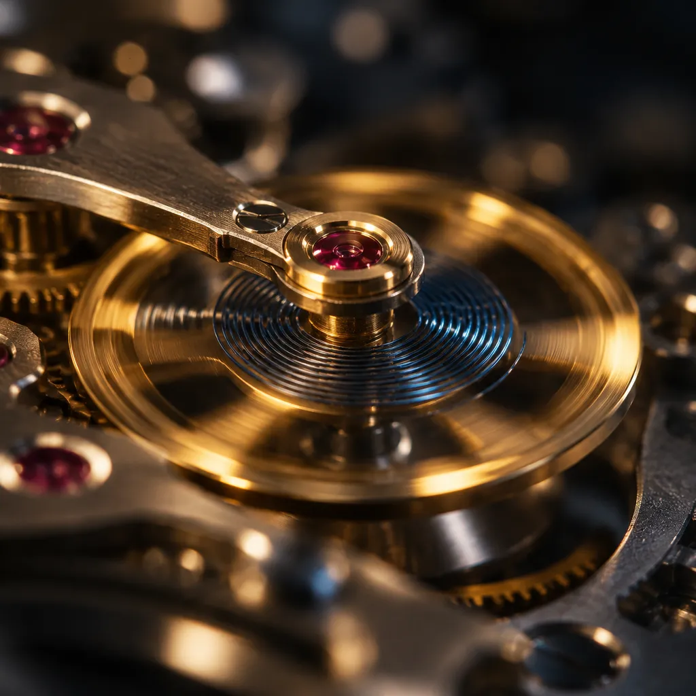

I
Turn it over.
Behind the sapphire caseback the Calibre H-01 beats at 28,800 vibrations an hour. The balance swings four times a second, and the pallet fork lets the escape wheel advance half a tooth at a time.
Calibre 01 Perpetual, an edition of eighty-eight
A hand-wound watch of 247 parts, each one finished, assembled and regulated by a single watchmaker above Le Sentier, in the Vallée de Joux.
Showing your time, . The seconds hand beats eight times a second.
I
Behind the sapphire caseback the Calibre H-01 beats at 28,800 vibrations an hour. The balance swings four times a second, and the pallet fork lets the escape wheel advance half a tooth at a time.
II
Forty turns of the crown coil the mainspring tight inside its open barrel. Fully wound, it keeps seventy-two hours: three days off the wrist before the balance comes to rest.
12h
Power reserve, of 72 hours
III
Two hundred and forty-seven components and thirty-one jewels. Every one is bevelled, grained or polished by hand, including the parts no owner will ever see.
IV
Re-cased, then regulated in five positions and observed for twenty-one days before it leaves the atelier, keeping within minus two and plus four seconds a day.

Thirty-nine and a half millimetres across and 10.4 thin, cut to slip beneath a shirt cuff. Wound each morning with forty turns of the crown, a small ritual that takes less than a minute.

The maison
Aurèle Vautier left a career restoring museum clocks in 2009 and took the lease on a farmhouse above Le Sentier, where winter lasts long enough to finish a balance cock properly. Fifteen years on, the maison is eleven people, a 1920s rose engine and a single calibre we keep refining rather than replacing.
Each watch is assembled start to finish by one watchmaker, whose initials are engraved beneath the balance cock, where only the next person to service it will find them.
The craft
Most of the time in a Horologe goes into surfaces hidden behind the dial or under a bridge. We finish them anyway, because the watchmaker knows they are there.

01
Each balance cock is engraved freehand with a burin under a ten-times loupe. Forty hours of work, and no two patterns are alike.

02
Two thousand four hundred overlapping circles, grained one at a time with a turning pegwood stick, so the mainplate catches the light even where it is hidden.

03
Our dials are cut on a 1920s rose engine turned by hand. A dial takes a day; a slip of a hundredth of a millimetre and it goes back to the melt.

04
Twenty-one days on the timing bench in five positions. Only then is the caseback closed and the number engraved.
The editions
The numbering
Nuit pieces placed with collectors so far: 47. The next to be engraved on its caseback is No. 048, and it is still unassigned.
We never produce more than an edition promises, and we do not hold a waiting list. When a number is gone, it is gone.
By appointment
Viewings are private and unhurried: at the atelier in Le Sentier, in our Geneva salon, or by video with the watchmaker at the bench. Élise Vautier replies to every request personally, usually within a day.